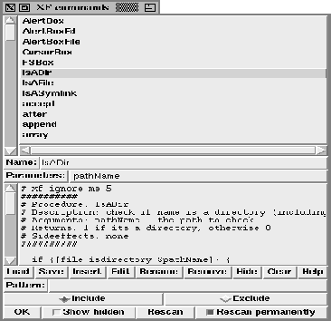
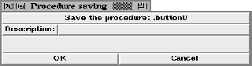
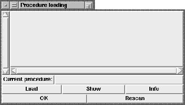

This procedure pops up the command handling dialog. This dialog provides access to the user defined procedures and the Tcl/Tk commands.

Figure: The procedure XFProcProgCommands
The upper list shows all commands. By clicking on a name, the name, the arguments and the body are inserted into the three fields below the list.
To restrict the displayed commands to a subset, a pattern can be specified. This pattern can be used to include matching commands, or to exclude them.
The buttons at the bottom of the window control the changing of the commands. The (Insert) button creates a new procedure with the current name, arguments and body. The (Edit) button updates the current procedure. The (Rename) button pops up a dialog box where the new name can be entered. The (Remove) button removes the current procedure. The (Hide) button allows hiding a procedure. A hidden procedure no longer exists as a procedure. To unhide a procedure the user switches to the hidden procedures and presses the (Unhide) button. The (Clear) button clears the text fields, and the (Help) button calls the help program for the current procedure. The remaining buttons at the bottom control the rescan of the variables, and allow the termination of the dialog.
The (Save) button allows the saving of procedures to a ShapeTools archive or a plain file. These procedures can later be reused in other programs. The save dialog allows the definition of a message that is attached to the saved file.

Figure: The procedure XFProcProgCommands (saving)
The (Load) button allows the loading of externally saved procedures. The procedure can be loaded or displayed.

Figure: The procedure XFProcProgCommands (loading)